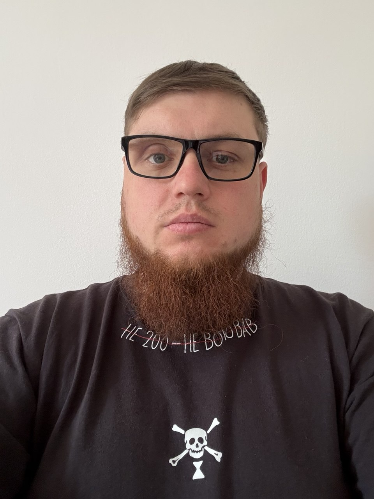

Ім'я: Міхов Микола
Email: Mixov13@gmail.com
Телефон: +380 000000000
Адреса: Україна, Тернопіль
Про себе:До війська жив у Маріуполі, працював на заводі «Азовсталь» токарем-розточувальником із програмним керуванням. У 2020 році пішов служити за контрактом. У липні 2025 року звільнився за станом здоров’я. Я є ВПО, наразі проживаю в місті Тернопіль. За станом здоров’я не можу працювати за професією, і загалом фізична праця мені протипоказана: не можна піднімати більше двох кілограмів, а також є багато інших обмежень. Від курсу в першу чергу хочу отримати початкові знання і навички, щоб надалі вчитися та розвиватися в цьому напрямку. У подальшому — знайти роботу.